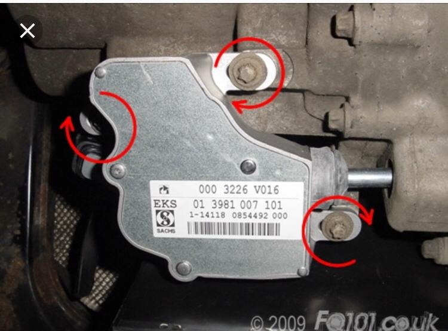
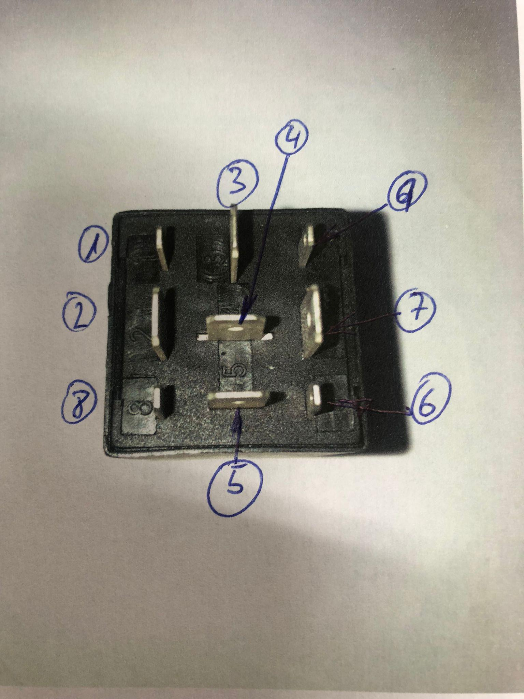

Ajuste del actuador de embrague#
El actuador de embrague (en la foto) se debería ajustar regularmente para conseguir un cambio de marchas más preciso y rápido.
 {kind=link}
{kind=link}
Para realizar el ajuste es necesario el sistema MB Star. Los pasos a realizar, una vez identificado el vehículo, son los siguientes:
Limpiar el registro de fallos
Desbloquear el inmovilizador, coche apagado, freno de mano y contacto puesto.
Ir al menú: Sistemas > MEG > Activación de actuadores > Embrague > “Después de … sustitución del componente”
Entrar en “Reprogramar la posición de embragado y de desembragado” y realizar el proceso hasta que indique “Resultado de la reprogramación: Activo”.
Volver al menú anterior y entrar en “Reprogramar el punto de roce del embrague” y realizar todo el proceso.
Si tienes el DAS en inglés los pasos son:
Limpiar registro de fallos
Desbloquear el inmovilizador, coche apagado, freno de mano y contacto puesto.
Ir al menú: Systems > MEG > Actuation of actuators > Clutch > Following removal, installation…
Entrar en “Teach in clutch engaged and disengaged position” y realizar el proceso hasta que indique “Teach-in result: COMPLETED”
Volver al menú “Actuations” y entrar en “Teach-in drag point of clutch” y realizar el proceso.
Si indica que no es posible, es necesario realizar previamente un ajuste manual.
Aflojar los tornillos que aparecen en la figura, lo suficiente para que se mueva.
Moverlo hacia adelante hasta que haga tope.
Moverlo hacia atrás 1 mm
Apretar los tornillos
Realizar el ajuste con la Star.